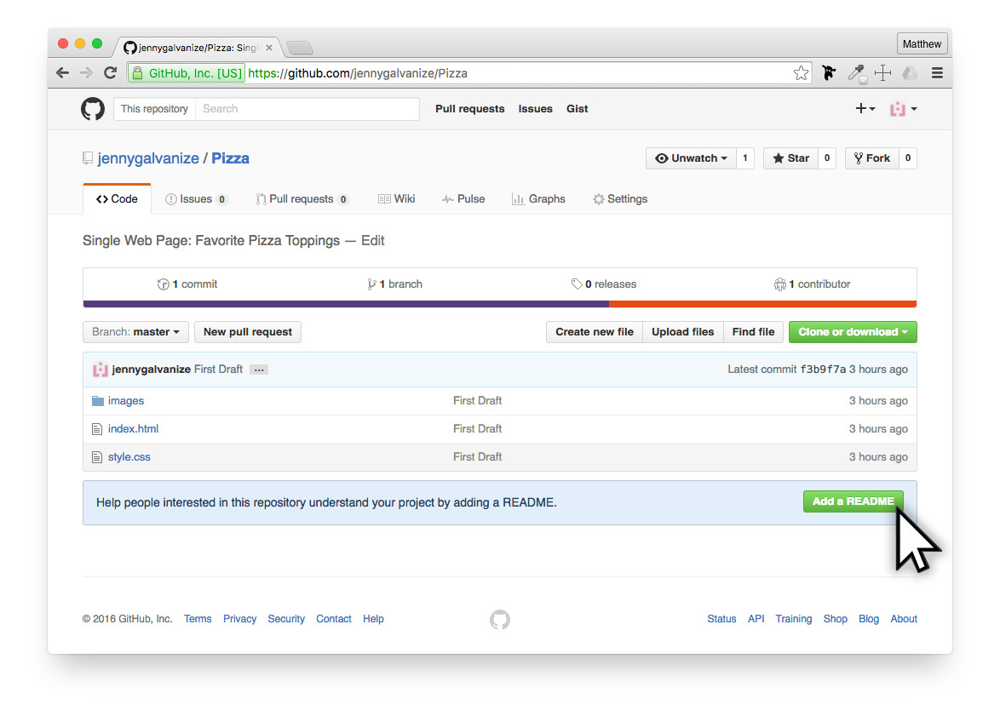
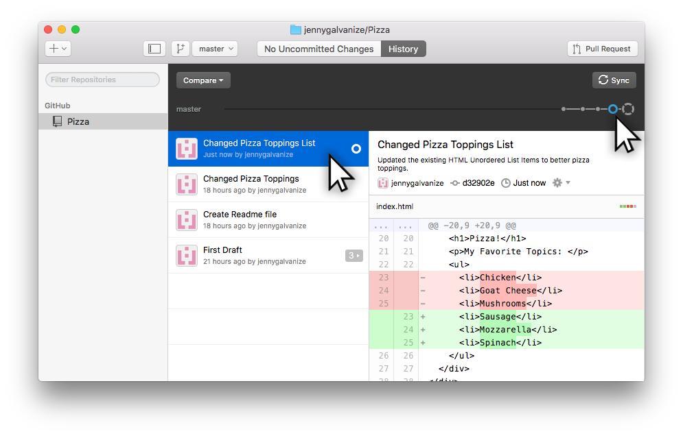

Download, install, and connect the GitHub Desktop Application
Commit and track your versions of a small web project
Fork and edit new versions of a small web project
You will also get to play with a simple pizza web page to help you learn how useful GitHub can be.
Setting Up GitHub
Download Github for Desktop
If you haven't done this already, download GitHub Desktop.
GitHub Desktop is available for both Mac and Windows. Please download and install this application on your computer. If it is taking a moment to download, feel free to continue on with these lessons as you'll need to setup a GitHub account first anyways.
Setting up GitHub Account
Before you can use the GitHub Desktop app, you'll need to create a free account on GitHub.com.
You'll need to create a unique username, provide your email address, and provide a unique password (make sure it has at least 1 number in it or you'll be asked to create another password).
Choose Your Plan
At this time, you are welcome to start with unlimited repos for free. You can easily upgrade your account later if you need to protect certain projects by setting them to private. When you are ready, select the Finish Set Up button.
Verify Your Email
Before you can add a project to GitHub Desktop, you'll need to verify your email. Check your email you used with GitHub, find the email from GitHub, and click Verify email address.
Connecting GitHub Desktop
Although you can do a lot within the GitHub.com website, you'll find it easier to connect your GitHub Desktop app with your new account.
Now, open the GitHub Desktop application.
Welcome to GitHub Desktop
Don't skip the setup, but choose Continue.
Connect to GitHub
Enter in your Login and Password that you just provided during the Setup with GitHub.com.
Connected
This step simply shows that you are connected properly. Choose Continue.
Configure Git
Enter your email address and then select Continue.
If you understand how to use Terminal, you are welcome to download and Install Command Line Tools, but this is outside the scope of this tutorial.
Find local repositories
Since this is your first time setting up GitHub, chances are high that you don't have any existing repos. At this step, just click Done.
Removing the Tutorial
You are welcome to skip this step, but this 'tutorial' isn't always the easiest for beginners to learn GitHub from. In this case, we'll right-click on the title along the left-hand side and choose Remove to delete it. You can always use this technique to delete other projects from GitHub if you wish, as well.
Whew!
Ok…the GitHub Desktop application is ready for you to add your own projects. Read on!
First GitHub Repo
Start With a Project Folder
You may already have a project you wish to add onto GitHub, but for the time being, let's have a little fun with a simple web page that showcases your potential favorite pizza toppings.
Organize Your Project Folder
At this time, unzip your pizza.zip file and move the pizza folder into a good location on your computer. One suggestion would be to create a folder on your desktop called www and then you can place each web project within that. If necessary, your projects can be moved after they are connected to GitHub Desktop.
Add your Project to GitHub Desktop
Connecting your web project to GitHub is as simple as dragging the project folder over the GitHub Desktop application and dropping it.
Creating your first Repo
Yes! You want to create a new git repo here! Click Create and Add.
View Files in GitHub Desktop
At this step, you can click through and view all of the files that GitHub recognizes in the pizza folder. Feel free to click onto the HTML and CSS pages to see the code from each file that is being saved.
Adding Summary & Description
Every version of this project that you wish to commit changes to, needs a Summary and Description for this particular version of the project.
This would be a good example:
Summary: First Draft
Description: HTML: With a heading, unordered list, and a photo, and CSS: initial styled layout.
Every time a version is committed (aka saved), it is good practice to add a useful Summary and Description of the changes made. Since this is your first draft, feel free to keep it simple.
Once you are ready to upload your files, simply click Commit to Master.
Adding Name & Description
This step can seem a little redundant at first, but once you create your first commit, you'll have the opprotunity to create a repo name and description for this entire project. In this case, the Name is a simple title and the description is a general project overview. Once you have a name and description added, select Publish Repository. At this time, your files should start uploading to GitHub.com. In the case they don't, simply click the Publish button in the upper-right.
First Commit Completed
Congratulations. At this time, you have made your first commitment.
Find Your Repos
Once the files are committed to GitHub, the project is now stored in two places:
Local repository on your computer — You can work on this repository without an Internet connection using GitHub Desktop. This is where you edit files and make changes to your project.
Remote repository on GitHub.com — You can send people links to your repository on GitHub.com so they can see your code, file organization, and fork your own projects and build off of them.
While following best practices when working with GitHub, it is a great idea to create a unique ReadMe file that provides a better description of this project. To do this within Github, click the Add a README button.

Create Readme
This Readme file can be kept simple at this time. You can leave a note here that will make it easier to read up on while visiting GitHub.com. When you are down, add a Summary and then feel free to commit this file directly to the master branch by clicking Commit new file.
Sync Local and Online Files
Because you just made a change to your files online, you'll watch your local files to match exactly. This can be done by clicking the Sync button. This will pull the changes from online to your local computer.
View New Files
Now that you synced your files, you'll be able to see that the new Readme file has been duplicated on your local computer now, too!
Making New Commits
In order to give you a little more experience with making changes and new commits, let's give you the opprotunity to make a few changes to this project and commit the new version online.
At this time, open the HTML and/or the CSS documents into your code editor. You are welcome to edit the HTML and/or the CSS in any way you wish, but if web coding is still new for you, you can choose to only change the text within the List Items (between the <li> and the </li> of the unordered list).
If you need some help with thinking of pizza topping choices, you are welcome to find your top three items from this list:
Sauces
BBQ Sauce
Hot Buffalo Sause
Chipotle Cilandtro Sause
Italian Tomato (Traditional Pizza) Sause
Pesto Sause
Salsa Sause
White Cream Sause
Cheeses
Parmesan
Goat
Mozzarella
Formaggio Blend
Feta
Cheddar
Mexicana 3-Cheese Blend
Cottage
Veggies
Spinach
Black Olives
Tomatoes
Green Olives
Banana Peppers
Jalapenos
Kalamata Olives
Onions
Red Peppers
Mushrooms
Corn
Protein
Anchovies
Bacon
Canadian Ham
Chorizo Sausage
Chicken
Pepperoni
Sausage
Reviewing New Changes
Once you have made your edits, make sure you save your files. Then, when you look within GitHub Desktop, you'll see that the app recognizes the differences made and displays the before and after changes.
Committing New Changes
As you did before, when you are ready to commit your changes, make sure you add a new summary and description. Then commit your changes to the master.
Tracking All Changes
You may have noticed the growing number of dots along the top-right of the app. You can click these, or even the list of your commits, and track the edits from the time you started your First Draft through all the changes of this project.

Forking
Now that you are getting more comfortable working with your own files, let's learn how to fork a project from someone else and edit it. Remember, forking a project just means that you are a making a duplicate of the project and then giving yourself access to edit it.
For this demo, this is another project featuring 'our' favorite cookies. Follow these directions and you'll learn how to properly fork a project on GitHub and get it connected to your GitHub Desktop.
Forking a project you have access to to GitHub is as easy as clicking the Fork button in the upper-right.
How easy is that??
Fork on GitHub
Now that you have it forked and a copy pulled into your GitHub account, you'll want to clone the files to your local computer.
Click the Clone or Download button, then choose the Open in Desktop button. This will copy the files from GitHub.com onto your local computer and set up this project within the GitHub Desktop as well.
You'll have the option at this time to save the project folder anywhere you wish.
Cookie Challenge
Now that you have the project forked and cloned, you can edit the project files any way you wish and then commit the changes online as you have already learn.
Take a few minutes and use your existing HTML/CSS skills to update the demo:
(Easy) Update the Unordered List Items listing your top 3 favorite cookies.
(Harder) Update a new image and then style the background colors and text accordingly.
Commit your changes to GitHub.com
Create GitGub Webpage
At this point, you have 2 simple projects that are posted onto GitHub. Very few people will care about your GitHub directory since they can't see your files without downloading them. Now is your opprotunity to turn your GitHub repo into an actual web page in a few easy steps.
Step 1: Create new branch
Choose one of your project repos on GitHub.com, click the button Branch: master.
Then give this new branch the name "gh-pages". Yes, it has to be exactly that branch name to work.
Then click on the Create branch: gh-pages button.
Step 2: Change the default branch
Click onto Setting
Then click onto Branches
Then select the master dropdown and change it to gh-pages.
The select the Update button.
When prompted, "Are you sure?", click the button I understand, update the default branch.
Step 3: Update GitHub Desktop
Right now, your GitHub Desktop will post all new changes still to the master branch, but you now want it to upload to your gh-pages branch. Within GitHub Desktop, click the master branch download and select gh-pages.
Step 4: Find your Web Address (URL)
Back within Settings, if you scroll down, you'll find the URL to your GitHub Pages.
Step 4: Bask in your Glory
Take a moment to feel great about all that you were able to accomplish with these lesson. Now you have the skills to manage your web projects and get them live online.